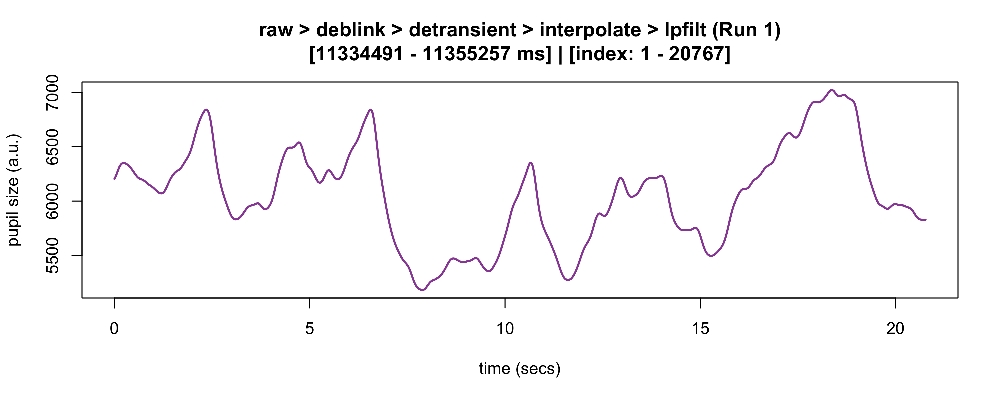
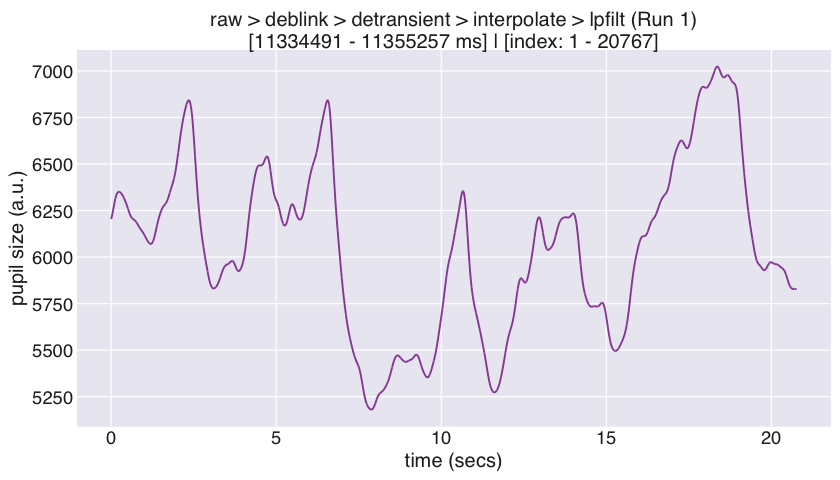
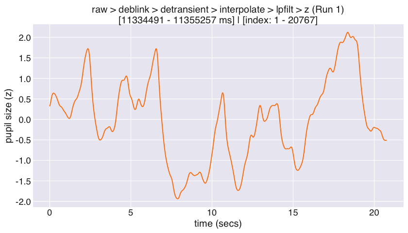
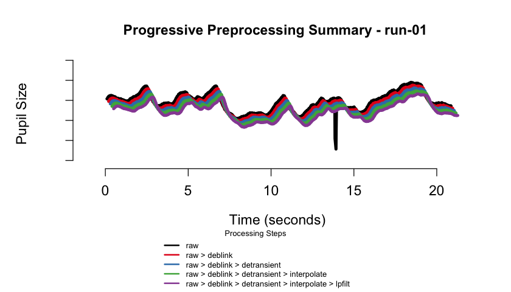
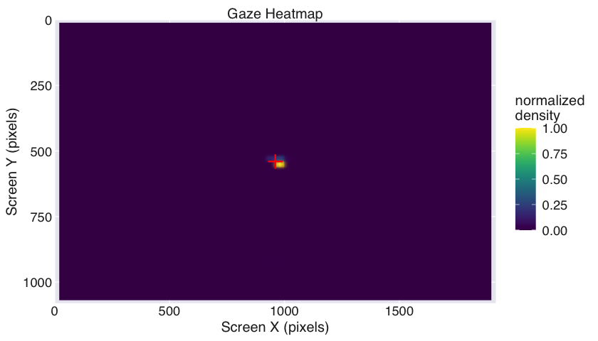

💻 eyeris DevOps Dashboard
Dive deeper into eyeris’ development and operational insights with our new eyeris DevOps Dashboard!
💡 Motivation
Despite decades of pupillometry research, many established packages and workflows unfortunately lack design principles based on (F)indability (A)ccessbility (I)nteroperability (R)eusability (FAIR) principles. eyeris, on the other hand follows a thoughtful design philosophy that results in an intuitive, modular, performant, and extensible pupillometry data preprocessing framework. Much of these design principles were heavily inspired by Nipype.
eyeris also provides a highly opinionated pipeline for tonic and phasic pupillometry preprocessing (inspired by fMRIPrep). These opinions are the product of many hours of discussions from core members and signal processing experts from the Stanford Memory Lab (Shawn Schwartz, Mingjian He, Haopei Yang, Alice Xue, and Anthony Wagner).
eyeris also introduces a BIDS-like structure for organizing derivative (preprocessed) pupillometry data, as well as an intuitive workflow for inspecting preprocessed pupillometry epochs within beautiful, interactive HTML report files (see demonstration below ⬇)! The package also includes gaze heatmaps that show the distribution of eye coordinates across the entire screen area, helping you assess data quality and participant attention patterns. These heatmaps are automatically generated in the BIDS reports and can also be created manually.
👁 Supported eye-tracker formats
The current version of eyeris reads data recorded with SR Research EyeLink eye-trackers (via the .asc files produced by the EyeLink edf2asc converter). EyeLink remains the most widely used research-grade system in the pupillometry community, so we focused our initial efforts there to ensure a robust, well-tested foundation.
That said, eyeris is designed from the ground up to be format-agnostic downstream of data loading: every preprocessing step operates on a standardized internal eyeris object rather than on raw EyeLink files. This means support for additional open-source and vendor eye-tracker formats (e.g., Pupil Labs, Tobii, GazePoint, and the emerging BIDS Eye Tracking specification) can be added by writing a new data-loading function that maps raw samples and event messages onto the same internal representation — no changes to the preprocessing pipeline are required.
Roadmap & community contributions. Broadening native support for other tracker formats is on our roadmap, and we actively welcome community contributions of new loaders. If you would like to help add support for your tracker of choice, please open an issue or pull request — see the contribution guidelines to get started.
🚀 Feature Highlights
-
📦 Modular Design: Each preprocessing step is a standalone function that can be used independently or combined into custom pipelines. -
🔍 Interactive Reports: Beautiful, interactive HTML reports that summarize preprocessing steps and visualize data quality. -
🔄 Flexible Extensions: Easily create custom extensions to the preprocessing pipeline by writing your own functions and adding them to the pipeline. -
📊 Data Quality Assessment: Automatically generated figures of each preprocessing step and its effect on the pupil signal (at the global and trial levels), as well as gaze heatmaps and binocular correlation plots to assess data quality and participant attention patterns. -
🗂️ BIDS-like File Structure: Organizes preprocessed data using a BIDS-like directory structure that supports both monocular and binocular eye-tracking data. -
📝 Logging Commands: Automatically capture all console output and errors to timestamped log files.

📖 Function Reference
Below is a table of all main eyeris functions, organized by feature, with links to their documentation and a brief description.
| Feature | Function Documentation | Description |
|---|---|---|
| Pipeline Orchestration | glassbox() | Run the full recommended preprocessing pipeline with a single function call. |
| BIDSify | bidsify() | Create a BIDS-like directory structure for preprocessed data as well as interactive HTML reports for data and signal processing provenance. |
| Data Loading | load_asc() | Load EyeLink .asc files into an eyeris object. |
| Sampling-Grid Resampling | resample() | Place each block onto the expected uniform sampling grid, repairing dropped-sample gaps for hardware that drops (rather than zero-fills) missing pupil data. |
| Blink Artifact Removal | deblink() | Remove blink artifacts by extending and masking missing samples. |
| Transient (Speed-Based) Artifact Removal | detransient() | Remove transient spikes in the pupil signal using a moving MAD filter. |
| Linear Interpolation | interpolate() | Interpolate missing (NA) samples in the pupil signal. |
| Lowpass Filtering | lpfilt() | Apply a Butterworth lowpass filter to the pupil signal. |
| Downsampling | downsample() | Downsample the pupil signal to a lower sampling rate. |
| Binning | bin() | Bin pupil data into specified time bins using mean or median. |
| Detrending | detrend() | Remove slow drifts from the pupil signal by linear detrending. |
| Z-scoring | zscore() | Z-score the pupil signal within each block. |
| Confound Summary | summarize_confounds() | Summarize and visualize confounding variables for each preprocessing step. |
| Epoching & Baselining | epoch() | Extract time-locked epochs from the continuous pupil signal. |
| Plotting | plot() | Plot the pupil signal and preprocessing steps. |
| Gaze Heatmaps | plot_gaze_heatmap() | Generate heatmaps of gaze position across the screen. |
| Binocular Correlation | plot_binocular_correlation() | Compute correlation between left and right eye pupil signals. |
| Demo (Monocular) Dataset | eyelink_asc_demo_dataset() | Load a demo monocular recording EyeLink dataset for testing and examples. |
| Demo (Binocular) Dataset | eyelink_asc_binocular_demo_dataset() | Load a demo binocular recording EyeLink dataset for testing and examples. |
| Logging Commands | eyelogger() | Automatically capture all console output and errors to timestamped log files. |
| Database Storage | eyeris_db_collect() | High-performance database storage and querying alternative to CSV files. |
| Database Summary | eyeris_db_summary() | Get comprehensive overview of database contents and metadata. |
| Database Connection | eyeris_db_connect() | Connect to eyeris databases for custom queries and operations. |
| Database Export (Chunked) | eyeris_db_to_chunked_files() | Export large databases in configurable chunks with automatic file size limits. |
| Database Export (Parquet) | eyeris_db_to_parquet() | Export database to high-performance Parquet format files. |
| Read Parquet Files | read_eyeris_parquet() | Read and combine eyeris Parquet files with schema-aligned binding. |
| Database Sharing (Split) | eyeris_db_split_for_sharing() | Split databases into chunks for easier sharing and collaboration. |
| Database Sharing (Reconstruct) | eyeris_db_reconstruct_from_chunks() | Reconstruct complete databases from shared chunks. |
| Custom Extensions | See vignette: Custom Extensions | Learn how to write your own pipeline steps and integrate them with eyeris. |
| Internal API Reference | See vignette: Internal API Reference | Comprehensive documentation of all internal functions for advanced users and developers. |
For a full list of all functions, see the eyeris reference index.
📦 Package Installation
Stable release from CRAN
You can install the stable release of eyeris from CRAN with:
install.packages("eyeris")or
# install.packages("pak")
pak::pak("eyeris")Development version from GitHub
You can install the development version of eyeris from GitHub with:
# install.packages("devtools")
devtools::install_github("shawntz/eyeris", ref = "dev")Optional: Database and Parquet Support
eyeris offers optional high-performance database storage (via DuckDB) and parquet file I/O (via Arrow) as alternatives to CSV files. These packages are not required for core functionality but provide significant performance benefits for large-scale analyses.
Installing DuckDB (for database features)
The duckdb package enables efficient storage and querying of large datasets. Required for bidsify(..., db_enabled = TRUE) and all eyeris_db_* functions:
install.packages("duckdb")Platform-specific notes:
-
macOS:
install.packages("duckdb", type = "binary") -
Linux: Use system packages (e.g.,
sudo apt-get install r-cran-duckdb) or install from CRAN -
Windows:
install.packages("duckdb")
Installing Arrow (for faster parquet operations)
The arrow package provides high-performance parquet file I/O for functions like eyeris_db_to_parquet(), read_eyeris_parquet(), and related export/import operations. When not available, eyeris automatically falls back to DuckDB for parquet operations (slower but functional).
macOS users: Arrow requires system dependencies via Homebrew:
# Install system dependencies first
brew update
brew install pkg-config cmake apache-arrow
# Then install the R package
install.packages("arrow", type = "binary")Linux users (Ubuntu/Debian):
# Install system dependencies
sudo apt-get update
sudo apt-get install -y libcurl4-openssl-dev libssl-dev
install.packages("arrow")Linux users (Fedora/RHEL):
install.packages("arrow")Windows users:
install.packages("arrow")For more details, see the Arrow R documentation.
Note: When you load
eyeris, startup messages will inform you if DuckDB or Arrow are not installed and provide detailed platform-specific installation instructions. You can also access these instructions anytime via?check_duckdband?check_arrow. Once installed, restart R and reloadeyeristo enable these features.
System Requirements
Minimum requirements:
- R >= 4.1.0
- 8 GB RAM for basic preprocessing
Recommended for large datasets:
- 16 GB RAM or more when generating HTML reports with
bidsify(), especially for datasets with many epochs or long recordings - SSD storage for improved I/O performance with database operations
Note: HTML report generation uses
pandocinternally viarmarkdown. Large preprocessing pipelines with many epochs may require additional memory during report rendering.
✏ Example
The glassbox() “prescription” function
This is a basic example of how to use eyeris out of the box with our very opinionated set of steps and parameters that one should start out with when preprocessing pupillometry data. Critically, this is a “glassbox” – as opposed to a “blackbox” – since each step and parameter implemented herein is fully open and accessible to you. We designed each pipeline step / function to be like a LEGO brick – they are intentionally and carefully designed in a way that allows you to flexibly construct and compare different pipelines.
We hope you enjoy! -Shawn
set.seed(32)
library(eyeris)
#>
#> eyeris v3.2.0.9000 - Lumpy Space Princess ꒰•ᴗ•｡꒱۶
#> Welcome! Type ?`eyeris` to get started.
demo_data <- eyelink_asc_demo_dataset()
eyeris_preproc <- glassbox(
demo_data,
lpfilt = list(plot_freqz = FALSE)
)
#> ✔ [2026-07-02 20:14:27] [OKAY] Running eyeris::load_asc()
#> ✔ [2026-07-02 20:14:28] [OKAY] Running eyeris::resample()
#> ℹ [2026-07-02 20:14:28] [INFO] Processing block: block_1
#> ✔ [2026-07-02 20:14:28] [OKAY] Running eyeris::deblink() for block_1
#> ✔ [2026-07-02 20:14:28] [OKAY] Running eyeris::detransient() for block_1
#> ✔ [2026-07-02 20:14:28] [OKAY] Running eyeris::interpolate() for block_1
#> ✔ [2026-07-02 20:14:28] [OKAY] Running eyeris::lpfilt() for block_1
#> ! [2026-07-02 20:14:28] [WARN] Skipping eyeris::downsample() for block_1
#> ! [2026-07-02 20:14:28] [WARN] Skipping eyeris::bin() for block_1
#> ! [2026-07-02 20:14:28] [WARN] Skipping eyeris::detrend() for block_1
#> ✔ [2026-07-02 20:14:28] [OKAY] Running eyeris::zscore() for block_1
#> ℹ [2026-07-02 20:14:28] [INFO] Block processing summary:
#> ℹ [2026-07-02 20:14:28] [INFO] block_1: OK (steps: 6, latest:
#> pupil_raw_deblink_detransient_interpolate_lpfilt_z)
#> ✔ [2026-07-02 20:14:28] [OKAY] Running eyeris::summarize_confounds()

Final pre-post correction of pupillary signal (raw ➡ preprocessed)
start_time <- min(eyeris_preproc$timeseries$block_1$time_secs)
end_time <- max(eyeris_preproc$timeseries$block_1$time_secs)
plot(eyeris_preproc,
# steps = c(1, 5), # uncomment to specify a subset of preprocessing steps to plot; by default, all steps will plot in the order in which they were executed by eyeris
preview_window = c(start_time, end_time),
add_progressive_summary = TRUE
)
#> ℹ [2026-07-02 20:14:28] [INFO] Plotting block 1 with sampling rate 1000 Hz from
#> possible blocks: 1






#> ✔ [2026-07-02 20:14:29] [OKAY] Progressive summary plot created successfully!
plot_gaze_heatmap(
eyeris = eyeris_preproc,
block = 1
)
🗄 Database Storage: Scalable Alternative to CSV Files
eyeris includes powerful database functionality powered by DuckDB that provides a scalable, efficient alternative to CSV file storage. This is especially valuable for large studies, cloud computing, and collaborative research projects.
Why Use Databases?
🚀 Performance at Scale - Handle hundreds of subjects efficiently vs. managing thousands of CSV files - Faster queries: filter and aggregate at the database level instead of loading all data into R - Reduced memory usage: load only the data you need
💯 Cloud Computing Optimized - Reduce I/O costs on AWS, GCP, Azure - Single database file vs. thousands of CSV files for data transfer - Bandwidth efficient and cost-effective for large datasets
🔒 Data Integrity - Built-in schema validation prevents data corruption - Automatic metadata tracking and timestamps
Quick Start: eyeris Project Database Creation
Enable eyeris project database storage alongside or instead of CSV files:
bidsify(
processed_data,
bids_dir = "~/my_study",
participant_id = "001",
session_num = "01",
task_name = "memory_task",
csv_enabled = TRUE, # keep traditional BIDS-style CSV output files
db_enabled = TRUE, # but also create an eyeris project database
db_path = "study_database"
)
bidsify(
processed_data,
bids_dir = "~/my_study",
participant_id = "001",
session_num = "01",
task_name = "memory_task",
csv_enabled = FALSE, # skip CSV creation
db_enabled = TRUE, # cloud-optimized: Database only (no CSV files)
db_path = "study_database"
)Simple Data Extraction
Extract all your data with one function call:
# extract ALL data for ALL subjects
all_data <- eyeris_db_collect("~/my_study", "study_database")
# access specific data types
timeseries_data <- all_data$timeseries
confounds_data <- all_data$run_confounds
# targeted extraction: specific subjects and data types
subset_data <- eyeris_db_collect(
"~/my_study",
"study_database",
subjects = c("001", "002", "003"),
data_types = c("timeseries", "epochs", "confounds_summary")
)Database Overview and Management
# get a comprehensive database summary
summary <- eyeris_db_summary("~/my_study", "study_database")
summary$subjects # all subjects in database
summary$data_types # available data types
summary$total_tables # number of tables
# connect to eyeris database for custom operations
con <- eyeris_db_connect("~/my_study", "study_database")
# ... custom SQL queries ...
eyeris_db_disconnect(con)💡 Pro Tip: Use
csv_enabled = FALSE, db_enabled = TRUEfor cloud computing to maximize efficiency and minimize costs.
📖 Complete Guide: See the Database Storage Guide for comprehensive tutorials, advanced usage, and real-world examples.
📁 BIDS-like file structure
eyeris organizes preprocessed data using a BIDS-like directory structure that supports both monocular and binocular eye-tracking data. The bidsify() function creates a standardized directory hierarchy with separate organization for different data types.
Monocular data structure
For single-eye recordings, data are organized in the main eye directory:
bids_dir/
└── derivatives/
└── sub-001/
└── ses-01/
├── sub-001_task-test.html
└── eye/
├── sub-001_ses-01_task-test_run-01_desc-timeseries.csv
├── sub-001_ses-01_task-test_run-01_desc-confounds.csv
├── sub-001_ses-01_task-test_run-01_desc-preproc_pupil_epoch-stimulus_bline-sub-stimulus.csv
├── sub-001_ses-01_task-test_run-01_events.csv
├── sub-001_ses-01_task-test_run-01_blinks.csv
├── sub-001_ses-01_task-test_run-01_summary.csv
├── sub-001_ses-01_task-test_run-01.html
└── source/
├── figures/
│ └── task-test_run-01/
│ ├── task-test_run-01_fig-1_deblink.jpg
│ ├── task-test_run-01_fig-2_detrend.jpg
│ ├── task-test_run-01_fig-3_interpolate.jpg
│ ├── task-test_run-01_fig-4_lpfilt.jpg
│ ├── task-test_run-01_fig-5_zscore.jpg
│ ├── task-test_run-01_gaze_heatmap.png
│ ├── task-test_run-01_detrend.png
│ └── task-test_run-01_desc-progressive_summary.png
└── logs/
└── task-test_run-01_metadata.jsonBinocular data structure
For binocular recordings, data are organized into separate left and right eye subdirectories:
bids_dir/
└── derivatives/
└── sub-001/
└── ses-01/
├── sub-001_task-test_eye-L.html
├── sub-001_task-test_eye-R.html
├── eye-L/
│ ├── sub-001_ses-01_task-test_run-01_desc-timeseries_eye-L.csv
│ ├── sub-001_ses-01_task-test_run-01_desc-confounds_eye-L.csv
│ ├── sub-001_ses-01_task-test_run-01_desc-preproc_pupil_epoch-stimulus_bline-sub-stimulus_eye-L.csv
│ ├── sub-001_ses-01_task-test_run-01_events_eye-L.csv
│ ├── sub-001_ses-01_task-test_run-01_blinks_eye-L.csv
│ ├── sub-001_ses-01_task-test_run-01_summary_eye-L.csv
│ ├── sub-001_ses-01_task-test_run-01_eye-L.html
│ └── source/
│ ├── figures/
│ │ └── task-test_run-01/
│ └── logs/
│ └── task-test_run-01_metadata.json
└── eye-R/
├── sub-001_ses-01_task-test_run-01_desc-timeseries_eye-R.csv
├── sub-001_ses-01_task-test_run-01_desc-confounds_eye-R.csv
├── sub-001_ses-01_task-test_run-01_desc-preproc_pupil_epoch-stimulus_bline-sub-stimulus_eye-R.csv
├── sub-001_ses-01_task-test_run-01_events_eye-R.csv
├── sub-001_ses-01_task-test_run-01_blinks_eye-R.csv
├── sub-001_ses-01_task-test_run-01_summary_eye-R.csv
├── sub-001_ses-01_task-test_run-01_eye-R.html
└── source/
├── figures/
│ └── task-test_run-01/
└── logs/
└── task-test_run-01_metadata.jsonFile naming convention
All files follow a consistent BIDS-like naming pattern:
-
Timeseries data:
desc-timeseries(with_eye-Lor_eye-Rsuffix for binocular data) -
Confounds:
desc-confounds(with eye suffix for binocular data) -
Epochs:
desc-preproc_pupil_epoch-{event}(with eye suffix for binocular data); when baseline correction is applied, the baseline is folded into the same file as a_bline-{type}-{event}token (e.g.desc-preproc_pupil_epoch-{event}_bline-{type}-{event}) -
Events:
events(with eye suffix for binocular data) -
Blinks:
blinks(with eye suffix for binocular data) - Reports: HTML files with eye suffix for binocular data
Events and blinks data
The events and blinks CSV files contain the raw event markers and blink detection data as stored in the eyeris object:
Events file structure:
-
block: Block/run number -
time: Timestamp of the event -
text: Raw event text from the ASC file -
text_unique: Unique event identifier
Blinks file structure:
-
block: Block/run number -
stime: Start time of the blink -
etime: End time of the blink -
dur: Duration of the blink in milliseconds -
eye: Eye identifier (L/R for binocular data)
Key features
- Organized Structure: Clear separation between monocular and binocular data
- Consistent Naming: Standardized file naming across all data types
- Complete Documentation: HTML reports with preprocessing summaries and visualizations
- Quality Assessment: Gaze heatmaps and binocular correlation plots for data quality evaluation
- Reproducibility: Metadata files documenting preprocessing parameters and call stacks
📝 Logging eyeris commands with eyelogger()
The eyelogger() utility lets you run any eyeris command (or block of R code) while automatically capturing all console output and errors to timestamped log files. This is especially useful for reproducibility, debugging, or running batch jobs.
How it works:
- All standard output (
stdout) and standard error (stderr) are saved to log files in a directory you specify (or a temporary directory by default). - Each run produces two log files:
-
<timestamp>.out: all console output -
<timestamp>.err: all warnings and errors
-
Usage
You can wrap any eyeris command or block of code in eyelogger({ ... }):
library(eyeris)
# log a simple code block with messages, warnings, and prints
eyelogger({
message("eyeris `glassbox()` completed successfully.")
warning("eyeris `glassbox()` completed with warnings.")
print("some eyeris-related information.")
})
# log a real eyeris pipeline run, saving logs to a custom directory
log_dir <- file.path(tempdir(), "eyeris_logs")
eyelogger({
glassbox(eyelink_asc_demo_dataset(), interactive_preview = FALSE)
}, log_dir = log_dir)Parameters
-
eyeris_cmd: The code to run (wrap in{}for multiple lines). -
log_dir: Directory to save logs (default: a temporary directory). -
timestamp_format: Format for log file names (default:"%Y%m%d_%H%M%S").
🤝 Contributing to eyeris
Thank you for considering contributing to the open-source eyeris R package; there are many ways one could contribute to eyeris.
We believe the best preprocessing practices emerge from collective expertise and rigorous discussion. Please see the contribution guidelines for more information on how to get started..
📜 Code of Conduct
Please note that the eyeris project is released with a Contributor Code of Conduct. By contributing to this project, you agree to abide by its terms.
💬 Suggestions, questions, issues?
Please use the issues tab (https://github.com/shawntz/eyeris/issues) to make note of any bugs, comments, suggestions, feedback, etc… all are welcomed and appreciated, thanks!
📚 Citing eyeris
If you use the eyeris package in your research, please consider citing our preprint!
Run the following in R to get the citation:
citation("eyeris")
#> To cite package 'eyeris' in publications use:
#>
#> Schwartz ST, Yang H, Xue AM, He M (2025). "eyeris: A flexible,
#> extensible, and reproducible pupillometry preprocessing framework in
#> R." _bioRxiv_, 1-37. doi:10.1101/2025.06.01.657312
#> <https://doi.org/10.1101/2025.06.01.657312>.
#>
#> A BibTeX entry for LaTeX users is
#>
#> @Article{,
#> title = {eyeris: A flexible, extensible, and reproducible pupillometry preprocessing framework in R},
#> author = {Shawn T Schwartz and Haopei Yang and Alice M Xue and Mingjian He},
#> journal = {bioRxiv},
#> year = {2025},
#> pages = {1--37},
#> doi = {10.1101/2025.06.01.657312},
#> }